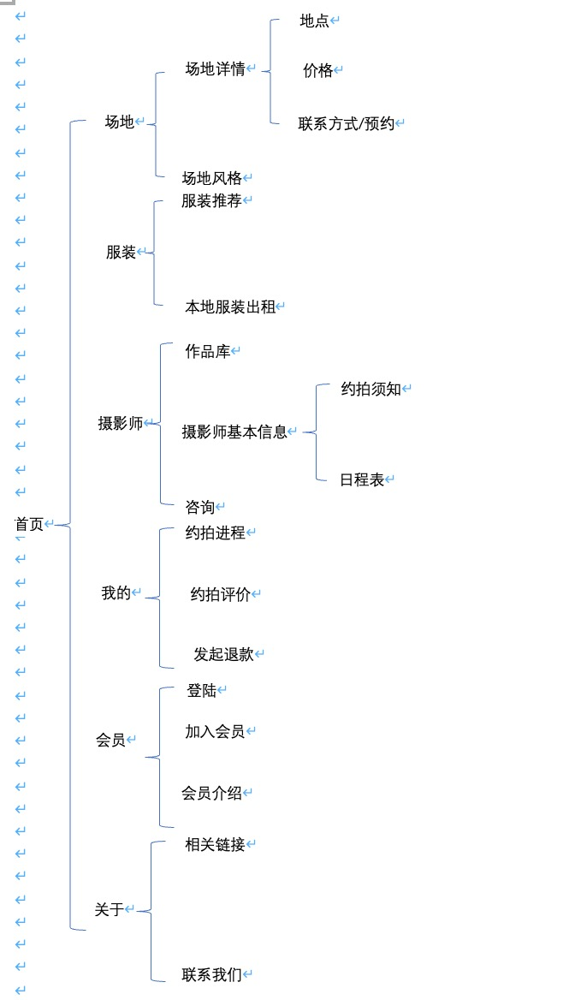
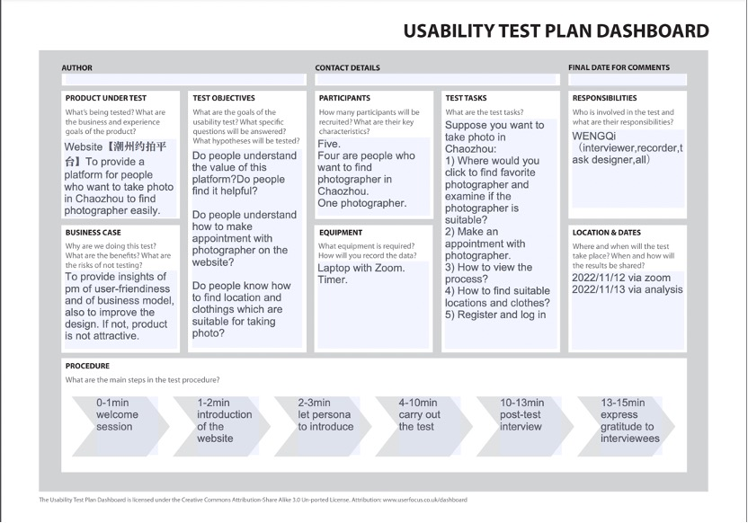

First Page
Sitemap of my website

The product positioning is to serve people who want to find a photographer in Chaozhou to take pictures, in this platform you can compare and view different styles of photographers, under the guarantee of the platform to make an appointment, you can also easily find the right scene and clothing needed to take pictures.
Usability test plan dashboard

Through usability testing, I can learn： Do people understand the value of this platform?Do people find it helpful? Do people understand how to make appointment with photographer on the website? Do people know how to find location and clothings which are suitable for taking photo? 1. Tasks Suppose you want to take photo in Chaozhou: 1) Where would you click to find favorite photographer and examine if the photographer is suitable? 2) Make an appointment with photographer. 3) How to view the process? 4) How to find suitable locations and clothes? 5) Register and log in 2. Post-Test Questions 1) Please rate the overall process: 5 as very satisfied, 1 as very dissatisfied 2) What difficulties did you encounter in the process? 3) How do you think the website can be improved?